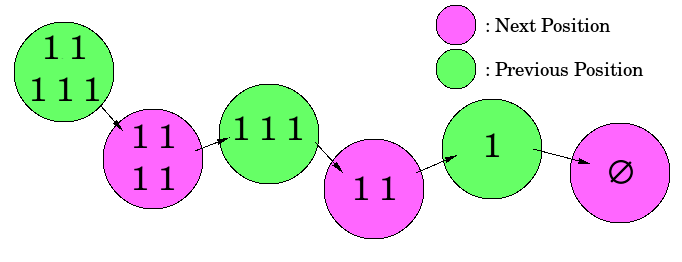

小约翰经常和他的哥哥玩一个非常有趣的游戏：桌子上有 $n$ 堆石子，小约翰和他的哥哥轮流取石子，每个人取 的时候，可以随意选择一堆石子，在这堆石子中取走任意多的石子，但不能一粒石子也不取，我们规定取到最后一粒石子的人算输。
小约翰相当固执，他坚持认为先取的人有很大的优势，所以他总是先取石子，而他的哥哥就聪明 多了，他从来没有在游戏中犯过错误。小约翰一怒之前请你来做他的参谋。自然，你应该先写一个程序，预测一下谁将获得游戏的胜利。
输入包含多组数据。
第一行包含一个整数 $T$ ($T \leq 500$)，表示共有 $T$ 组数据。
每组数据的第一行包含一个整数 $n$ ($n \leq 50$)，表示共有 $n$ 堆石子，接下来有 $n$ 个不超过 $5000$ 的整数，分别表示每堆石子的数目。
每组数据的输出占一行，每行输出一个单词。如果约翰能赢得比赛，则输出 John，否则输出 Brother，请注意单词的大小写。
可以看出，规则应该有点像 Nim 游戏，即一个简单的 ICG，不过规则有点变化，即取到最后一粒石子的人会输。
对于一般的 ICG，我们有著名的 Sprague-Grundy 定理，而对于这种 ICG 游戏，它也有对应的结论，叫做 Anti Sprague-Grundy 定理 (又叫 SJ 定理)：
如果一个 ICG 游戏，如果它的所有子游戏的 SG 值 (相当于 Nim 中的每堆石子) 均为 $0$ 时，接下来没有操作的一方获胜，则先手必胜的充要条件是：
接下来我们证明这个定理，记上述两个状态为 N 状态 (Next-Position, 必胜态)，剩余的状态为 P 状态 (Previous-Position, 必败态)，只需证明对于 N 状态，可以找到连向 P 状态的边，而对于 P 状态，只有连向 N 状态的边，根据定义，空状态 (出度为 $0$ 的点) 属于 N 状态。
再定义，如果所有子游戏的 SG 值均 $\leq 1$ 时，记该游戏为 "单纯游戏"。
首先考虑 "单纯游戏" 的 N 状态和 P 状态，如下图：

易证，此种情况的转移是唯一的，因此显然是有偶数个 $1$ 的一方胜，故它是 N 状态，奇数个 $1$ 即为 P 状态。
考虑非 "单纯游戏"，那么它的转移一定不是唯一的，我们分三种情况考虑：
有一个 SG 值 (以下简称值) $> 1$ 的子游戏，剩下偶数个 (可以是 $0$ 个) 值为 $1$ 的子游戏。
此时只需要让那个值 $> 1$ 的子游戏的值变成 $1$，就成了 P 状态，故它是 N 状态，而它的异或和显然非 $0$。
有一个值 $> 1$ 的子游戏，剩下奇数个值为 $1$ 的子游戏。
此时只需要让那个值 $> 1$ 的子游戏的值变为 $0$，剩下奇数个 $1$，依然是 P 状态，故它式 N 状态，异或和显然非 $0$。
有至少 $2$ 个值 $> 1$ 的子游戏，那么操作一次后值 $> 1$ 的子游戏还是存在的。
此时如果异或和为 $0$，那么显然怎么操作异或和都非 $0$，故为 P 状态；如果异或和非 $0$，那么根据 SG 定理，存在一种操作使异或和为 $0$，故为 N 状态。
知道了这个结论后，这道题就变得非常简单了。
只需记录一下所有石子数目的异或和以及是否存在 $> 1$ 的石子堆 flag，如果异或和为 $0$ 且 !flag，或异或和非 $0$ 且 flag，则先手 (John) 胜，否则 Brother 胜，可以通过逻辑异或操作简写为 !sg ^ flag ? "John" : "Brother"。
#include <bits/stdc++.h>
using namespace std;
int n, i, t;
int sg, scx;
int main(){
int T;
for(scanf("%d", &T); T; --T){
scanf("%d", &n); sg = scx = 0;
for(i = 0; i < n; ++i) {scanf("%d", &t); sg ^= t; scx |= (t > 1);}
puts(!sg ^ scx ? "John" : "Brother");
}
return 0;
}
无